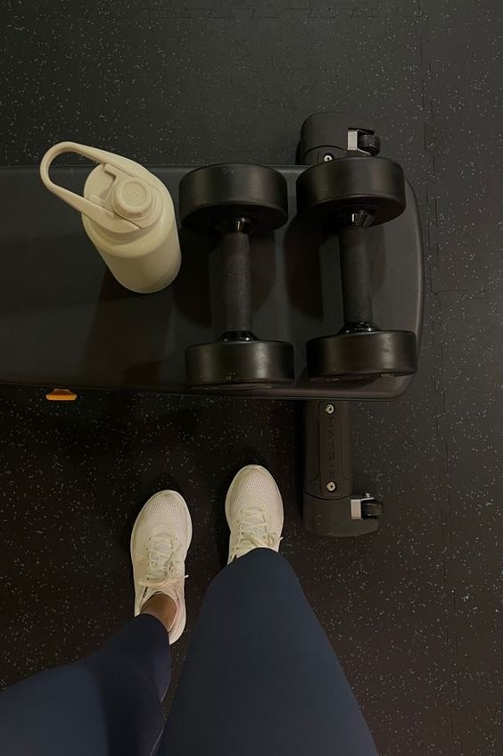

Dil Öğrenmek
Hobilerimin arasında dünyadaki farklı ve ilgi çekici dilleri öğrenmektir.
boş zamanlarımda farklı dil öğrenmekten çok keyif alırım.
Şuan hakim olduğum dillerden bir tanesi Arapça dilidir.
Diğer hakim olduğum dil ise ve aynı zamanda annemden öğrendim dildir Kürtçe dilidir.
son zamanlarda ise dillere olan merakımdan dolayı kendimi ingilizce dilinde de geliştirmeye başladım.
daha akıcı bir şekildi bu dili öğrenmek için kurslara kayıt yaptım ve devam etmekteyim.
ingilizce dilinden sonra ise ilerde almanca diliyle de ilgilenmeyi düşünüyorum.
SEYAHAT ETMEK
İlgi alanlarımın arasında seyehat etmek çok büyük bir yer kaplıyor. Seyahat etmek hayatımızı renklendirmenin, güzelleştirmenin en güzel yollarından biridir.Dünyada sadece yaşadığımız şehir yok. Onlarca ülke, binlerce şehir var ve her şehrin farklı bir kültürü var. Farklı kültürlerle yoğrulmuş yeni yerleri keşfederken ve yepyeni kültürler tanırken gezmenin ne kadar büyüleyici bir şey olduğunun farkına varabilirsiniz. Bu kültürleri tanımamızı sağlayacak yeni insanlarla tanışır, yepyeni yemekler tadarız. Gezdiğimiz şehirdeki insanlar, tarihi eserler, hatta coğrafya bile bize güzel bir film izliyormuşuz, güzel bir kitap okuyormuşuz hissi verir!Keşfettiğiniz yeni kültürler sayesinde farklı bakış açıları geliştirir ve dünyaya, sorunlarınıza bambaşka perspektiflerden bakabilirsiniz. Yani seyahat sadece gezdiğiniz dönemi değil, bütün hayatınızı, alışkanlıklarınızı, yaklaşımlarınızı etkileyebilecek bir şey. Kendini geliştirmek ve hayata bambaşka bakış açıları ile yaklaşabilmek hiç kuşku yok ki gezmenin faydalarından biri!

SPOR YAPMAK
Spor, benim için sadece bir aktiviteden ibaret değil, aynı zamanda bir tutku ve yaşam tarzıdır. Her gün düzenli olarak spor yapmak, bedenimi ve ruhumu güçlendirirken aynı zamanda zihinsel olarak da canlı ve odaklı olmamı sağlıyor. oşu, yüzme, basketbol gibi farklı spor dallarını denemekten büyük keyif alıyorum. Her biri benim için benzersiz bir deneyim sunuyor ve bedenimi hareket ettirmenin, kendimi sınırlarımın ötesine taşımanın ne kadar tatmin edici olduğunu her seferinde hissediyorum. Spor yaparken aldığım enerjiyi tarif etmek gerçekten zor. Ter attıkça, kaslarım çalıştıkça ve kalbim hızlandıkça, içimdeki mutluluk ve huzur hissi katlanarak artıyor. Spor benim için sadece fiziksel sağlık için değil, aynı zamanda ruhsal ve duygusal denge için de vazgeçilmez bir unsurdur.
POKEMON
Pokemon karakterlerini çok seviyorum. Hatta evimde bir kaç tane pokemon oyuncağı bile var bu yüzden bu kısımda size bir kaç pokemon karakteri göstermek istedim. Örnek olarak Pikachu, Ditto, Squirtle gibi bir çok pokemon ismini yazarak resmini görüntüleyebilirsiniz.